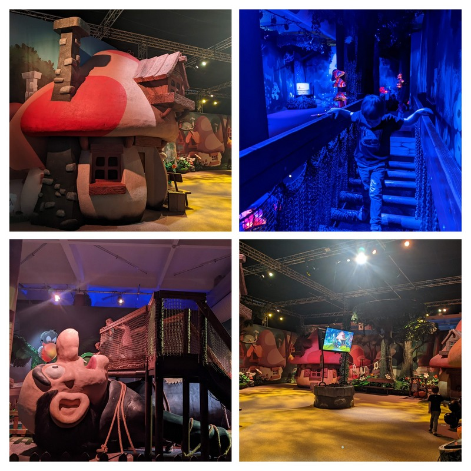
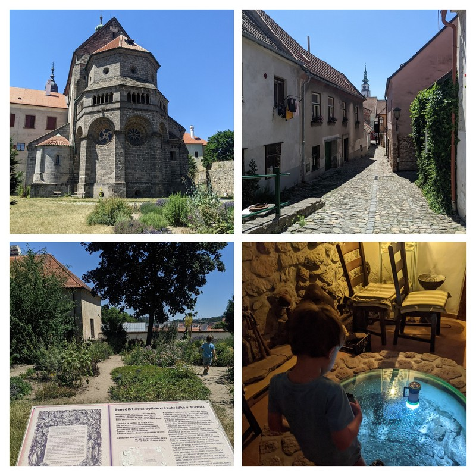
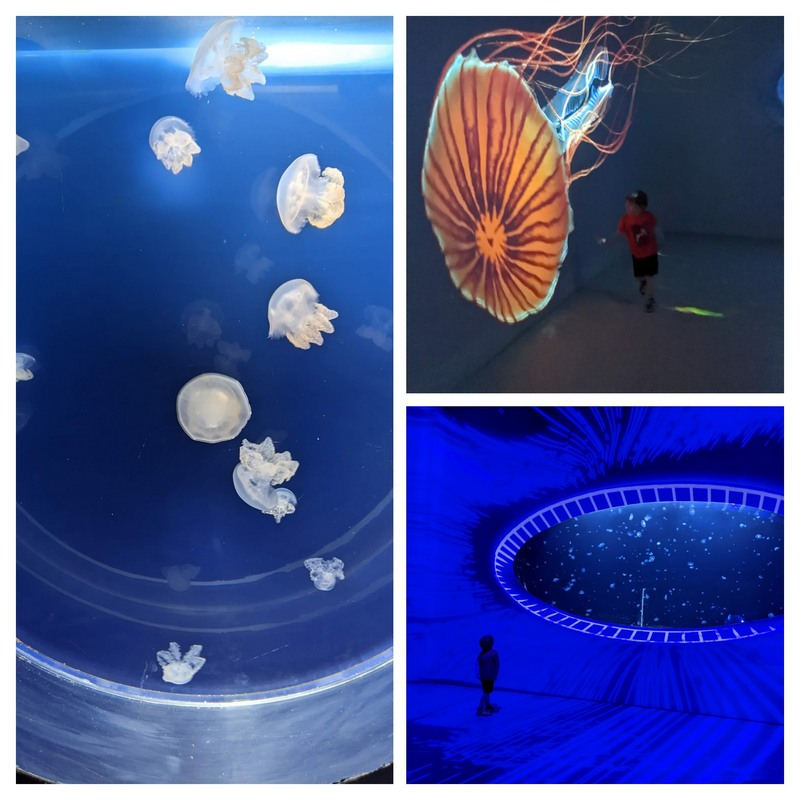
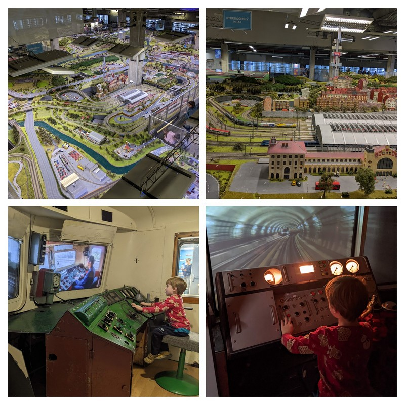

Na výletní rubriku tu sedá prach – ne snad proto, že bychom na výletování a další hezké akce zanevřeli, ale zkrátka jsem jen pozadu s jejich zaznamenáváním. Navíc jsem začala fotky zase více vyvolávat, a tak teď zaznamenávám naše rodinné vzpomínky taky jaksi víc hmatatelně :-) Ale protože tipy na výlety se vždycky hodí, rozhodla jsem se dohnat pár restů, co se mi tu kupí už víc jak rok.
Výstava Šmoulové, Výstaviště Brno
Především toto už je zážitek poněkud prošlý, výstava o magickém světě Šmoulů už brány brněnského výstaviště dávno opustila, ale protože se jednalo o putovní výstavu, třeba se sem někdy zase vrátí. Oli byl na Šmoulech dokonce dvakrát – poprvé jsme vyrazili s tetou Janou a Waltíkem ve všední den krátce po obědě a byl to naprosto ideální timing, protože dopolední školkové a školní skupiny už byly pryč a odpolední nápor ještě nenastal. Šmoulí vesničku jsme tak měli prakticky celou jen pro sebe a náramně jsme si to užívali. Přestože nejsem cílovka, vizuální provedení se mi moc líbilo. O. zase oceníl celou řadu interaktivních prvků – můj nejoblíbenější byla klouzačka u Gargamela :-D Během procházení výstavy kluci hledali stanoviště s razítky, resp. děrovačkami – za nasbírání potřebného množství razítek pak na konci dostali diplom a malý dáreček. Celé horní patro pak bylo plné atrakcí, na kterých se kluci mohli vyřádit – skákací hrady, stavění z lega, odrážedla, motokáry…

Kulturně-historické slavnosti „Oživené židovské město“, Třebíč
Jeden z velmi vydařených výletů loňského léta byl ten do Třebíče, kde toho času právě probíhala akce v židovské čtvrti, která patří mezi památky UNESCO. Já osobně jsem v Třebíči nikdy předtím nebyla a židovské město se svými úzkými malebnými uličkami můžu k návštěvě rozhodně doporučit. Na akci mysleli i na malé návštěvníky, a tak si tu Oli užil třeba jízdu na historickém kolotoči nebo workshop s pískovými omalovánkami. Podívali jsme se i dovnitř jednoho z domků, kde nám místní děti ukázaly studnu, kterou mají ve sklepě :-) Nakonec jsme se vydali i k areálu bývalého benediktinského kláštera a k románsko-gotické bazilice sv. Prokopa, která je právem považována za skvost středověkého stavitelství.

Svět medúz, Arkády Pankrác, Praha
Předloni k Vánocům jsme dostali vstupenky do „největšího medúzária v Evropě“, a tak jsme se do něj při nejbližší cestě do Prahy vypravili. Expozici tvoří 38 akvárii, která čítají více než 10 000 medúz různých druhů, tvarů i velikostí. Podívaná je to krásná, ač poněkud monotematická. Osobně mám radši akvária, kde člověk může spatřit všemožné druhy podmořského života. Expozici doplňují audiovizuální efekty, což Oliho ve výsledku zaujalo mnohem víc, než všechny medúzy dohromady – největší nadšení ovšem sklidil tobogán, propojující spodní a horní patro expozice – jak typické :-D Líbily se mu i výtvarné aktivity v dětském koutku, který se však nachází už mimo placenou zónu v kavárně, a tak tam můžete i bez vstupenky. Za sebe tedy návštěvu s dětmi vzhledem k ceně vstupenek asi úplně nedoporučuji.

Království železnic, Praha - Smíchov
Když už chcete s dětmi někde v Praze utrácet peníze, běžte radši sem :-D! Království železnic jsem Olíkovi slibovala už dlouho předlouho, a loni na podzim, když za námi přiletěli teta a strejda z Ameriky a strávili jsme spolu několik krásných dnů v podzimní Praze, jsem mu to konečně splnila. Království železnic je ráj pro každého malého šotouše – náš brněnský Modelový svět je vedle něj jen takový malý chudý (byť také moc krásný) příbuzný. Obrovitánské modelové kolejiště baví pozorovat nejen malé, ale i velké – a co teprve možnost sednout si do opravdové kabiny strojvedoucího nebo historického vagonu metra a zařídit si :-)! Expozice je opravdu velikánská, čítající i modely z lega nebo papíru, různé železničářské artefakty, Merkur dílnu – no ani jsme to nestačili všechno projít. Určitě se sem zase někdy moc rádi vrátíme.
